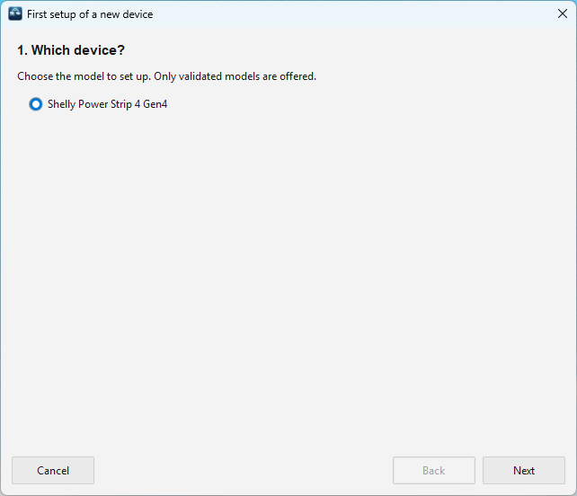
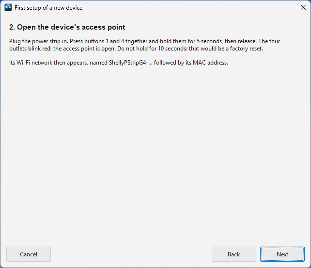
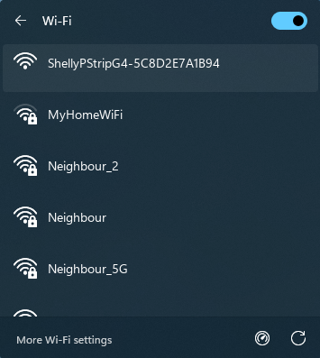
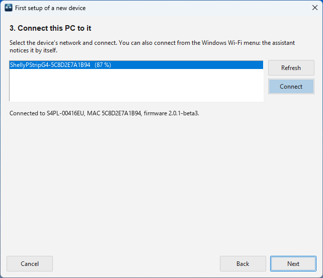
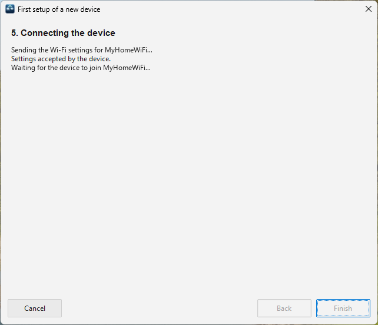
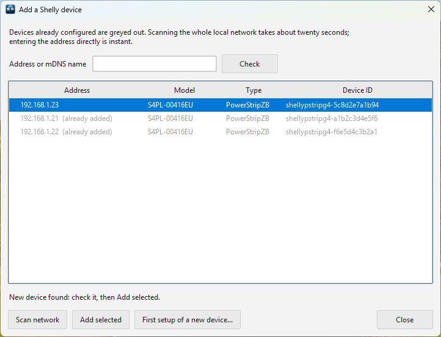
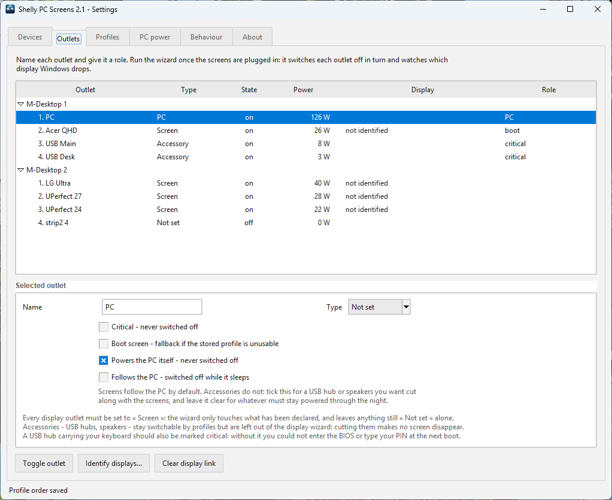

Setup guide
From the box to your first profile.
Eight steps, about fifteen minutes plus a calibration you let run while you use the PC. Every step is done once.
Before you start
- One or more Shelly Power Strip 4 Gen4, the device the app is validated on.
- Your home Wi-Fi in 2.4 GHz: the power strips have no 5 GHz radio.
- Wi-Fi on the PC, to set up a new power strip: the PC talks to it directly for a minute. A PC without Wi-Fi can use a power strip set up beforehand with the Shelly app on a phone.
- A Windows PC (64-bit) and an administrator's password, once, for the installation.
- Screens powered by their own power cord. A screen powered by the PC's USB-C cannot be cut by an outlet.
1Wire it
Spread the PC tower, the screens and the USB hubs across the power strips, and plug each power strip directly into the wall.
Not behind a master/slave power strip. A strip that cuts everything when the PC stops would cut the Shelly too: it loses the network and takes ten seconds to come back — exactly when it is needed.
- Put the PC tower on a Shelly outlet: its power draw is what tells the strip whether the PC is running.
- Put the keyboard's USB hub on an outlet that will stay on: without it, no BIOS and no PIN at boot.
2Install the app
- Download
ShellyPCScreens-<version>.exefrom the releases page and run it. - The executable is not signed yet: if Windows shows Windows protected your PC, click More info → Run anyway.
- Click Install, and approve the administrator prompt.

screenshots/setup-install.pngThe app is installed for every account of the PC, starts at sign-in, and its icon appears next to the clock. Left click opens the settings; right click the menu.
Updating later is the same gesture: run the new executable and click Update. Your configuration and history are kept.
3Add the power strips
Settings → Devices → Add device... What comes next depends on the power strip:
- New, straight out of the box, or reset to factory settings: the app sets it up for you. This is the usual case, follow it below.
- Already on your Wi-Fi, because you set it up earlier with the Shelly app: skip to it.
A new power strip
No Shelly app, no account, no phone: the app puts the power strip on your Wi-Fi itself, in five short steps. Allow a few minutes per strip.
Have ready:
- The password of your Wi-Fi.
- The power strip plugged into the wall and within reach: you will press two of its buttons.
- The PC's Wi-Fi turned on, even if the PC normally uses a network cable.
For about a minute, the PC leaves your Wi-Fi to talk to the power strip directly: no internet over Wi-Fi during that time. The wizard gives your Wi-Fi back at the end, and also if you click Cancel.
In the Add a Shelly device window, click First setup of a new device... at the bottom.
1Which device?
The wizard opens on the choice of model.

screenshots/first-setup-model.pngOnly one model is offered for now, the Shelly Power Strip 4 Gen4, already selected. Click Next.
2Open the power strip's access point
The wizard tells you what to do on the power strip.

screenshots/first-setup-access-point.pngOn the power strip, press buttons 1 and 4 at the same time, hold them for 5 seconds, then release. The four outlets blink red: the power strip now broadcasts its own small Wi-Fi network, named ShellyPStripG4- followed by a code.
Count to five, not ten. Holding the buttons for 10 seconds resets the power strip to its factory settings. On a new strip nothing is lost: press again for 5 seconds.
Once the outlets blink red, click Next.
3Connect the PC to the power strip
The wizard lists the power strip's network, ShellyPStripG4-…, with its signal in percent. If the list stays empty, check that the outlets still blink red and click Refresh; if they no longer blink, press buttons 1 and 4 again for 5 seconds.
Now connect the PC to that network, in one of two ways:
- In the wizard: select the network and click Connect.
- From the Windows Wi-Fi menu (the network icon next to the clock): click the
ShellyPStripG4-network, then Connect. Use this way if the wizard says Windows refused the connection.

screenshots/windows-wifi-menu.pngWindows may show the power strip's network as No internet: that is normal, the power strip is not a router.
As soon as the PC is on the power strip's network, the wizard finds the power strip: the line under the list shows its model, its MAC address and its firmware, and Next becomes clickable.

screenshots/first-setup-connect.pngClick Next.
4Choose your Wi-Fi
The wizard lists the networks this PC sees on 2.4 GHz, the only band the power strip understands.

screenshots/first-setup-wizard.pngClick your network: its name fills in below. Type its password (tick Show to check it), then click Send to the device.
- Colours: green is excellent, orange is good, red is too weak and the power strip may lose the connection. The signal is measured by the PC, so it is only a good guide if the power strip sits near the PC.
- "5 GHz only": this PC sees that network on 5 GHz only, which the power strip cannot use. Many routers give both bands the same name: pick it anyway, the next step will tell.
- Your network is not listed (hidden network): type its exact name in Network (SSID).
5Let the power strip join your Wi-Fi
Nothing to do: the wizard sends the settings, waits for the power strip to join your network, gives the PC its Wi-Fi back, then closes by itself. It takes up to a minute.

screenshots/first-setup-send.png- The device's access point dropped: reconnecting this PC to it... is normal: the power strip is switching networks.
- The device did not join…: the password is usually the cause. Click Back, retype it with Show ticked, and send again.
- …was not found on your network: it may still be joining. Close the wizard, wait a moment, and click Scan network.
✓Add it
Back in Add a Shelly device, the new power strip is found and already selected.

screenshots/add-device-found.pngClick Add selected.
Repeat for each power strip.
A power strip already on your Wi-Fi
Click Scan network (about twenty seconds), select it, click Add selected. Typing its address in Address or mDNS name and clicking Check is instant.
Check the signal
In the Devices tab, the Signal column should read good or excellent for every power strip.

screenshots/devices-tab.png4Types and roles
Outlets tab: select each outlet and set what it carries and how to treat it. The type says what is at the end of the cord; the roles say what must never happen to it.

screenshots/outlet-roles.pngWhat to set on each outlet:
| Outlet | Type | Tick |
|---|---|---|
| PC tower | — | Powers the PC itself: never switched off, and measured |
| Main screen | Screen | Boot screen: the one that comes on if the last profile cannot |
| Other screens | Screen | Follows the PC is ticked for you |
| Keyboard's USB hub | Accessory | Critical: never switched off |
| Other hubs, speakers | Accessory | Follows the PC only if you want them off while the PC sleeps |
Give every screen outlet the Screen type: the next step only tests those, and an outlet whose type is not set is left alone by every automation.
These settings are shared by every account. Changed from an account that is not allowed to save them, a banner asks for an administrator once: Save changes (administrator).
5Identify the screens
Still in Outlets, click Identify displays... to match each screen outlet to its monitor.
It first tells you what it will cut and what it leaves alone (the PC, critical outlets, outlets without a type):

screenshots/identify-confirm.pngEach screen outlet is cut in turn for about twelve seconds while the app watches which monitor Windows loses, then powered back. The other screens stay on. At the end, each screen outlet knows its monitor, and the layout of your desk is recorded.

screenshots/identify-displays.png
screenshots/identify-result.pngA "ghost screen" is not a failure. Some screens stay listed by Windows once their outlet is cut, as HDMI commonly does. If the screen is already linked, the assistant keeps the link and says so. If it is not linked yet, link every other screen first: running the assistant again then deduces the last pair. Day to day, the app takes it off the Windows desktop while its outlet is off. More on ghost screens.
An outlet carrying no screen (a hub, the PC) is simply not identified: that is normal.

screenshots/outlets-tab.png6Let the strip follow the PC
PC power tab. This is what switches everything off when the PC sleeps, and back on when it boots, even with the app closed.
- Click Start measuring, then use the PC normally for a while: let it idle, put it to sleep, shut it down, turn it back on.
- Click Read now: the app shows the levels it saw and suggests thresholds. Click Use suggested thresholds, or drag the lines on the curve.
- Click Install / update to send the script to the power strip.

screenshots/power-chart.png
screenshots/pc-power-tab.pngDefaults if you skip the measurement: running above 25 W, off below 15 W, 3 s to switch on, 90 s to switch off. The features page explains why.
7Build your profiles
Profiles tab → New, name it, then click the screens on the map (or tick the outlets) it should power. Protected outlets are always ticked and greyed out.
- All on already exists and cannot be edited.
- Order the profiles by dragging them: that is their order in the menu and for keys 1–9.
- If the map is empty, click Capture layout...: everything comes on while Windows shows where each screen is.

screenshots/profiles-tab.png8Try it
- Press Ctrl+Win+Alt+P, pick a profile: the missing screens come on first, then the others go off, and stranded windows come back.
- Put the PC to sleep: about ninety seconds later, the screens go dark. Wake it: they come back a few seconds later.
- Shut the PC down and turn it on: the last profile returns at boot, with the keyboard ready for the BIOS.
- Right click the icon → Consumption history... the next morning, to see the night.

screenshots/profile-picker.pngOptional
- Password on the power strips: Devices → Password... → Apply to device.
- LED rings: Devices → LEDs..., to dim them or set a night mode from 22:00 to 07:00.
- Shortcut, language, theme: Behaviour tab.
If something is off
| You see | Check |
|---|---|
| Red dot on the icon | No power strip answers: their power, and the Wi-Fi. Menu → Reconnect. |
| Orange dot | One strip is missing or refuses its password: Devices tab. |
| Blue dot, profiles refused | Another account's session is on the screen and drives the strips. Switch to it. |
| Screens off while the PC runs | The off threshold is too high: measure again in PC power. |
| Nothing at boot | An outlet must carry Boot screen, and the script must be installed. |
| No keyboard in the BIOS | Its USB hub must be Critical. |
| A screen stays black once its outlet is back on | A ghost screen taken off the desktop while the app was not running to put it back: Win+P → Extend. |
Everything the app does is in its log: right click the icon → Open log file. More in the full documentation.